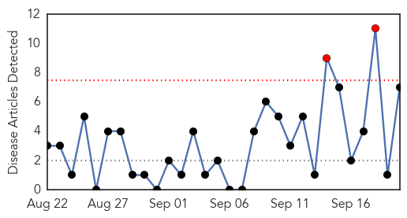
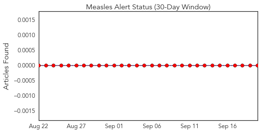
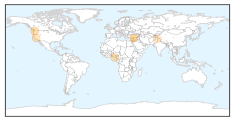
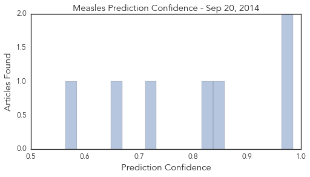

Swine Flu
30-Day Web Trend
1 alerts, 0 warnings

30-Day Twitter Trend
0 alerts, 0 warnings

Article Locations

Article Confidences

Top Articles:
Top Tweets:
-
No tweets found for Sep 20, 2014
Measles
30-Day Web Trend
2 alerts, 0 warnings

30-Day Twitter Trend
0 alerts, 0 warnings

Article Locations
Article Confidences
Top Articles:
- 0.985
- 2 children in state confirmed with rare enterovirus
- 0.974
- The Pacific - Humanitarian Snapshot (as of 19 September 2014) - Vanuatu
- 0.853
- Bayelsa Denies Outbreak Of Polio, Measles
- 0.825
- Parents Choosing Not to Vaccinate out of Fear of Vaccine Injuries
- 0.716
- Measles Vaccine Kills Dozens In Syria
- 0.662
- Health services limping back to normal in Kashmir
- 0.564
- Syrian children die in measles vaccination mishap
Top Tweets:
-
No tweets found for Sep 20, 2014